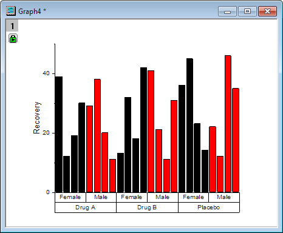

Gruppierte Säulendiagramme, Index
grouped-column-index-data
Datenanforderungen
Sie brauchen mindestens eine Y-Spalte als Eingabedaten. Optional können Sie eine zusätzliche Y-Fehlerspalte für jede Y-Spalte haben. Eine weitere Spalte enthält Gruppierungsinformationen.
Diagramm erstellen
Zum Öffnen des Dialogs plot_gindexed haben Sie drei Möglichkeiten:
- Wählen Sie Zeichnen > Kategorial: Gruppierte Säulen, Index im Menü.
- Klicken Sie auf die Schaltfläche
 auf der Symbolleiste 2D-Grafiken.
auf der Symbolleiste 2D-Grafiken.
Wählen Sie in dem aufgerufenen Dialog den Eingabebereich aus. Fügen Sie mindestens eine Gruppenspalte hinzu und bestimmen Sie, wo die berechneten Daten angezeigt werden. Sie können dann ein gruppiertes Säulendiagramm erzeugen.
Einzelheiten zu den Bedienelementen erhalten Sie im Abschnitt unten:
Dialog plot_gindexed
| Datenspalte(n) |
Dieser Zweig wird zum Festlegen der Eingabedaten verwendet. |
| Gruppenspalte(n) |
Enthalten sind hierbei ein Anzeigefeld und eine Symbolleiste mit fünf Schaltflächen  : :
-
Anzeigefeld
- Die ausgewählten Gruppenbereiche werden mit Hilfe der Schaltfläche Hinzufügen in diesem Feld angezeigt. Die ersten ausgewählten Gruppenbereiche werden als erste Kategorisierung festgelegt und bilden die untere Zeile der Gruppentabelle des Säulendiagramms; die zweiten ausgewählten Gruppen fahren mit der Gruppierung basierend auf der ersten Kategorisierung fort und bilden den zweiten Layer der Gruppentabelle und so weiter.
- Schaltfläche Hinzufügen

- Klicken Sie auf diese Schaltfläche und wählen Sie dann eine Spalte vom Menü aus; oder klicken Sie auf Spalten auswählen, um den Spaltenbrowser und fügen Sie (eine) Spalte/n in das Anzeigefeld als Gruppierungsbereich(e). Sie können bis zu 5 Gruppierungsbereiche hinzufügen.
- Schaltfläche Entfernen

- Die ausgewählten Datenbereiche werden aus dem Anzeigefeld entfernt. Diese Schaltfläche ist verfügbar, wenn Sie einen oder mehrere Datenbereiche im Feld Gruppenspalte(n) auswählen.
- Schaltfläche Nach oben verschieben

- Die ausgewählten Datenbereiche werden im Anzeigefeld nach oben verschoben. Die Gruppierungsabfolge wird geändert.
- Schaltfläche Nach unten verschieben

- Die ausgewählten Datenbereiche werden im Anzeigefeld nach unten verschoben. Die Gruppierungsabfolge wird geändert.
- Schaltfläche Alle auswählen

- Alle Datenbereiche im Feld Gruppenspalte(n) werden ausgewählt.
|
| Diagrammtyp |
Legen Sie das Säulen- oder Balkendiagramm fest. |
| Ausgabedaten |
Legen Sie fest, wo die berechneten Daten ausgegeben werden. |
Zusätzlich können Sie sich das finale Diagramm in diesem Dialog anzeigen lassen.
Hinweis:
-
- Die Option Neu berechnen ist in diesem Dialog standardmäßig auf Auto gesetzt.
- Um den Gruppierungsbereich nicht in der alphabetischen Standardanordnung zu sortieren, setzen Sie die ihn (sie) als kategorisch und verändern Sie die Anordnung auf der Registerkarte Kategorien.
- Standardmäßig teilen wir die Spalten durch die erste Gruppenspalte in Teildatensätze, wenn wir ein Gruppensäulendiagramm in diesem Dialog erstellen. Sie können die Standardeigenschaften des Teildatensatzes auf der Registerkarte Abstand (Details Zeichnung) ändern.
|
Beispiele
 |
- Öffnen Sie eine neue Arbeitsmappe und klicken Sie auf die Schaltfläche
 , um die Datei Categorical Data.dat aus dem <Origin-Verzeichnis>\Samples\Graphing zu importieren. , um die Datei Categorical Data.dat aus dem <Origin-Verzeichnis>\Samples\Graphing zu importieren.
- Markieren Sie Spalte B und wählen Sie Zeichnen > 2D: Balken: Gruppierte Säulen, Index im Hauptmenü, um den Dialog plot_gindexed zu öffnen.
- Klicken Sie im Abschnitt Gruppenspalte(n) auf die Schaltfläche Hinzufügen oben rechts und fügen Sie die Spalte D als den ersten Gruppierungsbereich hinzu. Fügen Sie entsprechend Spalte C als den zweiten Gruppierungsbereich hinzu.
- Klicken Sie auf OK, um das Diagramm zu erzeugen.
- 
|
Vorlage
gColumn.otp gBar.otp (im Origin-Ordner installiert)
Hinweise
- Wenn es mehr als einen Gruppierungsbereich (in dem Feld Gruppenspalte(n)) gibt, werden die Hilfsstrichsbeschriftungen der X-Achse standardmäßig als Tabellen angezeigt. Sie können dieses Verhalten und die Formatierung der Tabelle der Hilfsstrichsbeschriftung im Allgemeinen über die Registerkarte Tabelle auf der Registerkarte Beschriftung der Hilfsstriche des Dialogs Achsen steuern.
- Standardmäßig verwendet dieses Diagramm Index zum Anwenden von Füllfarbe. Es gibt jedoch auch andere Optionen. Die folgende Abbildung zeigt drei Variationen des gleichen Diagramms. Der Unterschied besteht in der Art und Weise, wie Farbe auf die Balken angewendet wird:
-
- Im Diagramm links wird die Balkenfarbe auf die Teilgruppe (Gender) indiziert. Dies ist Standard und sollte für die meisten Situationen, einschließlich unbalancierter Zeichnungen, verwendet werden können.
- Im mittleren Diagramm wird Balkenfarbe auf die Hauptgruppe (Drug) indiziert.
- Im Diagramm rechts ist die Balkenfarbe auf Inkrement gesetzt, mit einer Teilgruppengröße von 8.
-
Weitere Informationen finden Sie unter:
- Sie können die Abstände zwischen den Säulen bzw. Säulengruppen mit Hilfe der Bedienelemente auf der Registerkarte Abstände des Dialogs Details Zeichnung modifizieren.
- Um ein gruppiertes Balkendiagramm zu erstellen, können Sie den Diagrammtyp im Dialog plot_gindexed auf Balken setzen. Alternativ können Sie ein gruppiertes Säulendiagramm mit Hilfe des Menübefehls erstellen und dann Grafik: X-Y-Achse austauschen wählen.